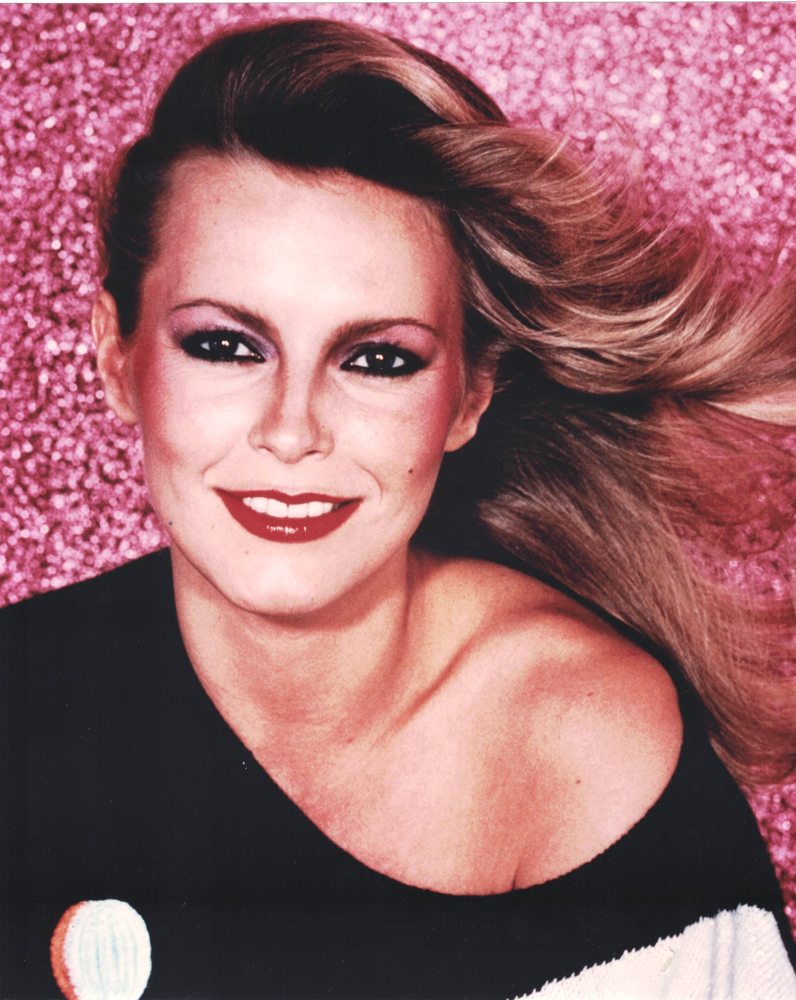

Product No. HEC-0081
$10.99
Shipping: $8.95
Description
8x10 color photograph
Full Description
Cheryl Ladd is an American actress, singer, and author best known for starring as Kris Munroe in the hit television series "Charlie's Angels." Born Cheryl Jean Stoppelmoor on July 12, 1951, in Huron, South Dakota, she began her entertainment career as a singer before moving into television and acting. Ladd joined "Charlie's Angels" in 1977 at the beginning of the show's second season, replacing Farrah Fawcett as a regular cast member. She played Kris Munroe, the younger sister of Fawcett's character Jill Munroe, and starred alongside Kate Jackson and Jaclyn Smith. Ladd remained with the series through its final season in 1981 and became one of the show's most recognizable stars. Her other television work includes "One West Waikiki," "Las Vegas," and numerous television movies. She also appeared in films such as "Purple Hearts," "Millennium," and "Poison Ivy." In addition to acting, Ladd recorded several albums and had success as a pop singer during the late 1970s and early 1980s. Ladd has also appeared on stage and written books, including works for children and about golf. Her long association with "Charlie's Angels," along with her television, film, and music career, has made Cheryl Ladd a popular figure among collectors of 1970s television, classic Hollywood memorabilia, signed photographs, and celebrity autographs.
Condition
Excellent condition